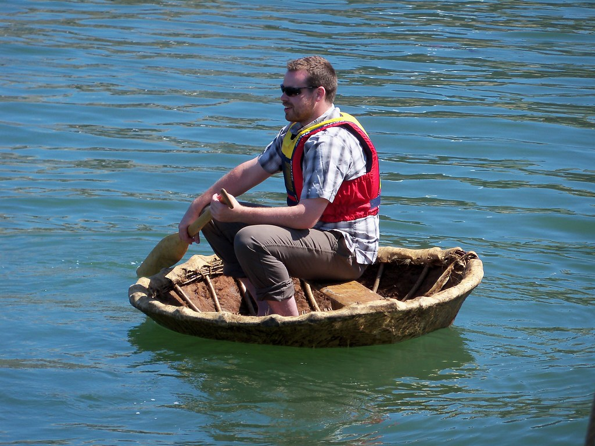

Lógica e Algoritmo
O homem, o lobo, o bode e a caixa de alfafa.

- Para atravessar o rio, primeiramente o homem prende o lobo em uma árvore para que não fuja junto a caixa de alfafa.
- Pega o bode, entra no barco e rema até a outra margem do rio.
- Chegando a outra margem do rio, tira o bode do barco e amarra o bode em uma árvore para que não fuja.
- Entra em seu barco e rema em direção para buscar o lobo.
- Desamarrando o lobo da árvore entra no barco com ele e rema até a outra margem do rio.
- Chegando a outra margem do rio, tira o lobo do barco e amarra o lobo em uma árvore, desamarra o bode da árvore e entra no barco e rema em direção a caixa de alfafa.
- Chegando a outra margem do rio, tira o bode do barco e amarra o bode em uma árvore para que não fuja.
- Pega a caixa de alfafa e coloca no barco e rema em direçaõ ao lobo.
- Chegando a outra margem do rio, tira a caixa de alfafa e coloca ao lado do lobo, ele vola para o barco e rema em direção ao bode.
- Chegando a outra margem do rio,desamarra o bode da árvore coloca o bode no barco e rema em direção ao lobo
- Chegando a outra margem do rio o homem tira o bode do barco, desamarra o lobo da árvore e conclui o transporte de suas cargas com segurança.